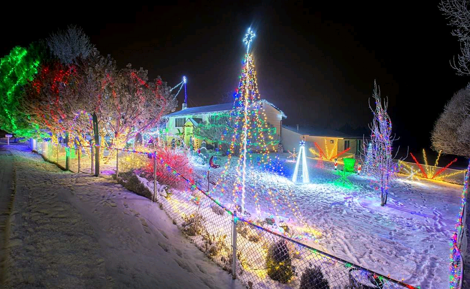

Festival of Lights
Varaprasad Chilumula
Each year Preston holds the "Idaho Festival of Lights", which starts the day after Thanksgiving and goes until December 31. The festival was started by two local business men (Wayne Bell and Walter Ross) along with many other community organizations to help celebrate Christmas within the community. The festival consists of a lighted parade, fireworks, and displays in the city park. The merchants along the main street of Preston have their store fronts decorated with Christmas lights during the festival